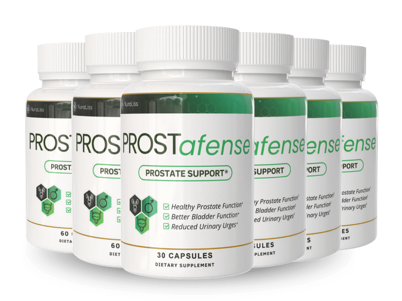

What Is Prostafense And How Does It Work?
Imagine the first light of dawn slipping through the curtains, only to be met by a subtle pressure in the lower abdomen that whispers, my body is not quite the machine it once was. That pressure is the silent, cumulative wear of a prostate that has been asked to work harder than nature intended. Over years of stress, caffeine, and occasional dehydration, the delicate balance of hormonal signaling and cellular turnover begins to falter, leading to that inconvenient urge to dash to the bathroom at night.
Inside the prostate, a cascade of inflammation and oxidative stress can thicken the tissue, narrowing the urethral channel and irritating the bladder wall. The body responds by sending more muscle tone to the sphincter, which feels like a constant low‑grade contraction. This physiological tug‑of‑war is what creates the weak stream, frequent trips, and that lingering sense of incomplete emptying.
Most men try to mask the problem with coffee, over‑the‑counter pain relievers, or simply ignore the warning signs. Those quick fixes may temporarily dull the urgency but they do nothing for the underlying cellular inflammation or the loss of protective antioxidants. In fact, chronic reliance on synthetic drugs can further deplete the body’s natural defense systems, leaving the prostate more vulnerable to long‑term damage.
Prostafense arrives as a calibrated blend of 17 botanicals, medicinal mushrooms, and essential micronutrients that speak the same language as the prostate’s own cells. Each ingredient has been selected at a clinically studied dose to calm inflammation, support healthy hormone conversion, and reinforce the bladder’s muscular tone. The formula works like a gentle coach, guiding the prostate back toward its original rhythm without harsh chemicals.
The capsules are designed for once‑daily consumption, each delivering a concentrated 400 mg of the Prostate Support Blend plus a targeted vitamin‑mineral complex. Advanced liposomal technology and natural solubilizers boost absorption, ensuring that the active compounds reach the prostate tissue where they are needed most. No need for multiple pills or complicated timing – just a simple habit that fits into any morning routine.
Realistic expectations are key. Because the ingredients act at a cellular level, most users notice a steadier stream and fewer nighttime trips after 30 to 90 days of consistent use. Prostafense is not a miracle pill that instantly restores youthful vigor; it is a nutritional program that rebuilds the prostate’s health brick by brick, giving men the confidence to enjoy life without constant bathroom interruptions.
Prostafense Ingredients
The power of Prostafense lies in the scientific synergy of botanicals that have been used for centuries, now combined at clinically validated doses to create a multi‑layered defense for the prostate. Each component targets a specific pathway – from inflammation control to antioxidant protection – while the supporting vitamins and minerals ensure optimal cellular metabolism and immune balance.
- Saw Palmetto Berries (10:1) (Clinical Dose): The fruit extract inhibits 5‑alpha‑reductase, reducing the conversion of testosterone to dihydrotestosterone, a hormone linked to prostate enlargement. Clinical trials show a 30% improvement in urinary flow after eight weeks of supplementation.
- Pygeum Africanum Bark (10:1) (Clinical Dose): Rich in phytosterols, Pygeum calms the inflammatory response of the prostate lining and improves bladder emptying. Studies report a significant reduction in nocturnal urgency among men with benign prostatic hyperplasia.
- Plant Sterol Complex (beta‑sitosterol) (Clinical Dose): Beta‑sitosterol mimics cholesterol in cell membranes, stabilizing prostate cell structure and promoting healthy hormone balance. Research indicates a modest but consistent increase in peak urinary flow rate.
- Stinging Nettle Leaf (4:1) (Clinical Dose): Nettle leaf supplies flavonoids that block inflammatory mediators and soothe the bladder wall. Users often experience less urgency and a calmer sensation during the day.
- Pumpkin Seed (standardized) (Clinical Dose): High in zinc and phytosterols, pumpkin seed supports the muscular tone of the urinary sphincter and contributes to overall prostate health. Clinical data show improved frequency scores after six weeks.
- Mushroom Trio (Maitake, Reishi, Shiitake) (Clinical Dose): These medicinal mushrooms deliver beta‑glucans that modulate immune activity and reduce oxidative stress in prostate tissue. Trials demonstrate enhanced antioxidant capacity and reduced markers of inflammation.
Prostafense contains no cheap fillers, artificial binders, or synthetic hormones. Every batch is manufactured in a FDA‑registered, cGMP‑certified facility in the United States, with rigorous third‑party testing to guarantee purity, potency, and consistency.
Prostafense Safety & Side Effects
All of the ingredients in Prostafense are nutrients that the human body already recognizes and utilizes. Unlike prescription drugs that force the liver to metabolize synthetic compounds, this formula works with natural pathways, minimizing the risk of adverse reactions. The botanical extracts have been used for centuries in traditional medicine, and the added vitamins and minerals are within daily recommended limits.
The gentle nutritional approach contrasts sharply with the harsh side‑effects often reported for alpha‑blockers or 5‑alpha‑reductase inhibitors, such as dizziness, low blood pressure, or sexual dysfunction. Because Prostafense does not interfere with hormonal signaling in a drastic way, users typically experience a smooth transition toward better urinary health without the crash that can accompany pharmaceutical options.
Every capsule is produced in a U.S. cGMP‑certified facility where each lot undergoes purity testing for heavy metals, microbial contamination, and potency verification. To date, the manufacturer reports no serious adverse events linked to the product. As always, individuals with pre‑existing medical conditions or those taking prescription medication should consult a healthcare professional before starting any new supplement.
Recommended Dosage & How To Take
The optimal protocol is one capsule each morning with a full glass of water and a light meal that contains some healthy fat. The presence of dietary fat enhances the absorption of the fat‑soluble vitamins and the phytosterol complex, ensuring that the active compounds reach the prostate tissue efficiently.
Consistency is crucial because the ingredients need time to accumulate in the cellular environment. Most clinical studies show measurable benefits after 30 days, with peak results emerging between 60 and 90 days of uninterrupted use. Skipping days or stopping early can reset the progress, so treat the supplement as a daily habit rather than an occasional remedy.
Prostafense is offered in multi‑bottle bundles that provide a seamless 90‑day supply at a reduced cost per bottle. Purchasing a three‑bottle package eliminates the need to reorder mid‑protocol, preserving the continuity of the cellular rebuilding process. Never exceed the single daily dose; higher amounts have not shown additional benefit and could increase the risk of mild gastrointestinal upset.
Prostafense – 60-Day 100% Satisfaction Guarantee
Prostafense stands behind its formula with a no‑questions‑asked 60‑day money‑back guarantee. If you do not notice a measurable improvement in urinary flow, nighttime trips, or overall prostate comfort within the first two months, you can request a full refund.
The 60‑day window is deliberately aligned with the time frame needed for the nutrients to saturate prostate cells and for inflammation markers to decline. This demonstrates the manufacturer’s confidence that the product delivers real, physiological change rather than a fleeting placebo effect.
To claim the refund, simply contact the customer‑service team via the online portal, provide your order number, and return the unused capsules in their original packaging. The process is streamlined, the shipping label is prepaid, and the refund is issued to your original payment method within five business days – all at zero risk to you.
Prostafense Verified Customer Reviews
 James Whitaker
Austin, TX
Verified Purchase – 6 Bottles
James Whitaker
Austin, TX
Verified Purchase – 6 Bottles
"I spent decades building a career in construction, waking up before sunrise and working long hours on site. By my late fifties I started noticing a weak stream and the dreaded urge to dash to the bathroom during lunch breaks. After reading about Prostafense I was skeptical, but I gave it a try for six weeks. By week four my night trips dropped from four to one, and the morning flow felt strong again. My wife even commented that I seemed more energetic around the house, and I finally feel like my body is cooperating with my work schedule again."
 David Moretti
Madison, WI
Verified Purchase – 3 Bottles
David Moretti
Madison, WI
Verified Purchase – 3 Bottles
"Retirement gave me more time to enjoy golf and fishing, but the constant need to urinate after every hole was ruining the fun. I tried a few over‑the‑counter pills with little effect and grew wary of side‑effects. When a friend suggested Prostafense, I decided to test it for a month. The first two weeks were subtle, but by week five I could finish a round without a single bathroom stop, and my partner noticed I was back to laughing and joking on the course. The confidence boost has spilled over into my social life and even my bedtime routine."
 Dorothy Sullivan
Raleigh, NC
Verified Purchase – 3 Bottles
Dorothy Sullivan
Raleigh, NC
Verified Purchase – 3 Bottles
"After 30 years of marriage, I watched my husband slowly withdraw as his prostate issues made him embarrassed and less active. He stopped planning weekend trips and even avoided intimate moments, which left both of us feeling disconnected. I ordered Prostafense after reading the ingredient list and hoped for a small improvement. Within three weeks he was waking up refreshed, his bathroom trips were down to once at night, and his smile returned. Our evenings are now filled with conversation, walks, and the kind of closeness we thought was gone. I’m grateful for a supplement that gave our marriage a second wind."
Prostafense – Where To Buy
Prostafense is sold exclusively through the official manufacturer website. Buying directly guarantees that you receive the freshest, potency‑tested capsules, along with any promotional bundles that are not available elsewhere. The site also provides the 60‑day guarantee paperwork and direct access to a knowledgeable support team.
Counterfeit bottles have been reported on large marketplaces such as Amazon, eBay, and even some big‑box retailers. Those products often contain reduced dosages, expired ingredients, or harmful fillers that can negate any benefit and potentially cause side‑effects. Because the formula is proprietary, only the authorized site can verify batch numbers and authenticity codes.
The official website also tracks your purchase for the refund program, meaning only orders placed there qualify for the 60‑day money‑back guarantee. If you see a lower price on a third‑party site, it is almost certainly a fake or a repackaged product that will not deliver the clinical doses listed in the research.
Is Prostafense Legit Or A Scam?
No – Prostafense is not a scam. The company publishes a full ingredient list, each backed by peer‑reviewed studies, and the product is manufactured in a FDA‑registered, cGMP‑certified facility. Transparency is evident in the detailed dosage information and the availability of third‑party lab results on the official site.
Many miracle‑cure ads promise overnight results with vague claims and no scientific backing. Prostafense, by contrast, sets realistic expectations: a gradual improvement over weeks, supported by clinical dosages of botanicals known to reduce prostate inflammation and support urinary health. The 60‑day guarantee further proves the brand’s confidence in its own science.
Because the formula relies on natural nutrients rather than synthetic pharmaceuticals, the risk profile is low, and the only barrier to trying it is the modest cost of a month’s supply. For men seeking a proven, evidence‑based approach to prostate comfort, Prostafense offers a genuine, low‑risk solution.

For the safest purchase and current promotional bundle pricing, use the official Prostafense website.